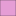

<!doctype html>
<html lang="en">
    <head>
        <meta charset="utf-8">
        <meta http-equiv="X-UA-Compatible" content="IE=edge">
        <meta name="viewport" content="initial-scale=1,user-scalable=no,maximum-scale=1,width=device-width">
        <meta name="mobile-web-app-capable" content="yes">
        <meta name="apple-mobile-web-app-capable" content="yes">
        <link rel="stylesheet" href="css/leaflet.css"><link rel="stylesheet" href="css/L.Control.Locate.min.css">
        <link rel="stylesheet" href="css/qgis2web.css"><link rel="stylesheet" href="css/fontawesome-all.min.css">
        <link rel="stylesheet" href="css/leaflet-control-geocoder.Geocoder.css">
        <link rel="stylesheet" href="css/leaflet-measure.css">
        <style>
        html, body, #map {
            width: 100%;
            height: 100%;
            padding: 0;
            margin: 0;
        }
        </style>
        <title>Gestion de Residuos Sólidos </title>
    </head>
    <body>
        <div id="map">
        </div>
        <script src="js/qgis2web_expressions.js"></script>
        <script src="js/leaflet.js"></script><script src="js/L.Control.Locate.min.js"></script>
        <script src="js/leaflet.rotatedMarker.js"></script>
        <script src="js/leaflet.pattern.js"></script>
        <script src="js/leaflet-hash.js"></script>
        <script src="js/Autolinker.min.js"></script>
        <script src="js/rbush.min.js"></script>
        <script src="js/labelgun.min.js"></script>
        <script src="js/labels.js"></script>
        <script src="js/leaflet.wms.js"></script>
        <script src="js/leaflet-control-geocoder.Geocoder.js"></script>
        <script src="js/leaflet-measure.js"></script>
        <script src="data/zona_1.js"></script>
        <script src="data/Acopio_2.js"></script>
        <script src="data/Empresas_recoleccion_3.js"></script>
        <script src="data/gestores_4.js"></script>
        <script src="data/microrutas_5.js"></script>
        <script src="data/Ptos_Criticos_7.js"></script>
        <script>
        var map = L.map('map', {
            zoomControl:true, maxZoom:28, minZoom:12
        }).fitBounds([[3.3361317583142815,-76.65042046157951],[3.5037865099144208,-76.38522679315624]]);
        var hash = new L.Hash(map);
        map.attributionControl.setPrefix('<a href="https://github.com/tomchadwin/qgis2web" target="_blank">qgis2web</a> &middot; <a href="https://leafletjs.com" title="A JS library for interactive maps">Leaflet</a> &middot; <a href="https://qgis.org">QGIS</a>');
        var autolinker = new Autolinker({truncate: {length: 30, location: 'smart'}});
        L.control.locate({locateOptions: {maxZoom: 19}}).addTo(map);
        var measureControl = new L.Control.Measure({
            position: 'topleft',
            primaryLengthUnit: 'meters',
            secondaryLengthUnit: 'kilometers',
            primaryAreaUnit: 'sqmeters',
            secondaryAreaUnit: 'hectares'
        });
        measureControl.addTo(map);
        document.getElementsByClassName('leaflet-control-measure-toggle')[0]
        .innerHTML = '';
        document.getElementsByClassName('leaflet-control-measure-toggle')[0]
        .className += ' fas fa-ruler';
        var bounds_group = new L.featureGroup([]);
        function setBounds() {
        }
        map.createPane('pane_OpenStreetMap_0');
        map.getPane('pane_OpenStreetMap_0').style.zIndex = 400;
        var layer_OpenStreetMap_0 = L.tileLayer('https://tile.openstreetmap.org/{z}/{x}/{y}.png', {
            pane: 'pane_OpenStreetMap_0',
            opacity: 1.0,
            attribution: '',
            minZoom: 12,
            maxZoom: 28,
            minNativeZoom: 0,
            maxNativeZoom: 19
        });
        layer_OpenStreetMap_0;
        map.addLayer(layer_OpenStreetMap_0);
        function pop_zona_1(feature, layer) {
            var popupContent = '<table>\
                    <tr>\
                        <td colspan="2">' + (feature.properties['Id'] !== null ? autolinker.link(feature.properties['Id'].toLocaleString()) : '') + '</td>\
                    </tr>\
                </table>';
            layer.bindPopup(popupContent, {maxHeight: 400});
        }

        function style_zona_1_0() {
            return {
                pane: 'pane_zona_1',
                opacity: 1,
                color: 'rgba(35,35,35,1.0)',
                dashArray: '',
                lineCap: 'butt',
                lineJoin: 'miter',
                weight: 1.0, 
                fill: true,
                fillOpacity: 1,
                fillColor: 'rgba(190,11,151,1.0)',
                interactive: true,
            }
        }
        map.createPane('pane_zona_1');
        map.getPane('pane_zona_1').style.zIndex = 401;
        map.getPane('pane_zona_1').style['mix-blend-mode'] = 'normal';
        var layer_zona_1 = new L.geoJson(json_zona_1, {
            attribution: '',
            interactive: true,
            dataVar: 'json_zona_1',
            layerName: 'layer_zona_1',
            pane: 'pane_zona_1',
            onEachFeature: pop_zona_1,
            style: style_zona_1_0,
        });
        bounds_group.addLayer(layer_zona_1);
        map.addLayer(layer_zona_1);
        function pop_Acopio_2(feature, layer) {
            var popupContent = '<table>\
                    <tr>\
                        <td colspan="2">' + (feature.properties['Id'] !== null ? autolinker.link(feature.properties['Id'].toLocaleString()) : '') + '</td>\
                    </tr>\
                    <tr>\
                        <td colspan="2">' + (feature.properties['Micro_Ruta'] !== null ? autolinker.link(feature.properties['Micro_Ruta'].toLocaleString()) : '') + '</td>\
                    </tr>\
                </table>';
            layer.bindPopup(popupContent, {maxHeight: 400});
        }

        function style_Acopio_2_0() {
            return {
                pane: 'pane_Acopio_2',
                radius: 4.0,
                opacity: 1,
                color: 'rgba(35,35,35,1.0)',
                dashArray: '',
                lineCap: 'butt',
                lineJoin: 'miter',
                weight: 1,
                fill: true,
                fillOpacity: 1,
                fillColor: 'rgba(152,125,183,1.0)',
                interactive: true,
            }
        }
        map.createPane('pane_Acopio_2');
        map.getPane('pane_Acopio_2').style.zIndex = 402;
        map.getPane('pane_Acopio_2').style['mix-blend-mode'] = 'normal';
        var layer_Acopio_2 = new L.geoJson(json_Acopio_2, {
            attribution: '',
            interactive: true,
            dataVar: 'json_Acopio_2',
            layerName: 'layer_Acopio_2',
            pane: 'pane_Acopio_2',
            onEachFeature: pop_Acopio_2,
            pointToLayer: function (feature, latlng) {
                var context = {
                    feature: feature,
                    variables: {}
                };
                return L.circleMarker(latlng, style_Acopio_2_0(feature));
            },
        });
        bounds_group.addLayer(layer_Acopio_2);
        map.addLayer(layer_Acopio_2);
        function pop_Empresas_recoleccion_3(feature, layer) {
            var popupContent = '<table>\
                    <tr>\
                        <td colspan="2">' + (feature.properties['Id'] !== null ? autolinker.link(feature.properties['Id'].toLocaleString()) : '') + '</td>\
                    </tr>\
                    <tr>\
                        <td colspan="2">' + (feature.properties['NIT'] !== null ? autolinker.link(feature.properties['NIT'].toLocaleString()) : '') + '</td>\
                    </tr>\
                    <tr>\
                        <td colspan="2">' + (feature.properties['Nombre'] !== null ? autolinker.link(feature.properties['Nombre'].toLocaleString()) : '') + '</td>\
                    </tr>\
                    <tr>\
                        <td colspan="2">' + (feature.properties['Contacto'] !== null ? autolinker.link(feature.properties['Contacto'].toLocaleString()) : '') + '</td>\
                    </tr>\
                    <tr>\
                        <td colspan="2">' + (feature.properties['Dirección'] !== null ? autolinker.link(feature.properties['Dirección'].toLocaleString()) : '') + '</td>\
                    </tr>\
                    <tr>\
                        <td colspan="2">' + (feature.properties['Correo'] !== null ? autolinker.link(feature.properties['Correo'].toLocaleString()) : '') + '</td>\
                    </tr>\
                </table>';
            layer.bindPopup(popupContent, {maxHeight: 400});
        }

        function style_Empresas_recoleccion_3_0() {
            return {
                pane: 'pane_Empresas_recoleccion_3',
                radius: 4.0,
                opacity: 1,
                color: 'rgba(35,35,35,1.0)',
                dashArray: '',
                lineCap: 'butt',
                lineJoin: 'miter',
                weight: 1,
                fill: true,
                fillOpacity: 1,
                fillColor: 'rgba(190,207,80,1.0)',
                interactive: true,
            }
        }
        map.createPane('pane_Empresas_recoleccion_3');
        map.getPane('pane_Empresas_recoleccion_3').style.zIndex = 403;
        map.getPane('pane_Empresas_recoleccion_3').style['mix-blend-mode'] = 'normal';
        var layer_Empresas_recoleccion_3 = new L.geoJson(json_Empresas_recoleccion_3, {
            attribution: '',
            interactive: true,
            dataVar: 'json_Empresas_recoleccion_3',
            layerName: 'layer_Empresas_recoleccion_3',
            pane: 'pane_Empresas_recoleccion_3',
            onEachFeature: pop_Empresas_recoleccion_3,
            pointToLayer: function (feature, latlng) {
                var context = {
                    feature: feature,
                    variables: {}
                };
                return L.circleMarker(latlng, style_Empresas_recoleccion_3_0(feature));
            },
        });
        bounds_group.addLayer(layer_Empresas_recoleccion_3);
        map.addLayer(layer_Empresas_recoleccion_3);
        function pop_gestores_4(feature, layer) {
            var popupContent = '<table>\
                    <tr>\
                        <td colspan="2">' + (feature.properties['Id'] !== null ? autolinker.link(feature.properties['Id'].toLocaleString()) : '') + '</td>\
                    </tr>\
                    <tr>\
                        <td colspan="2">' + (feature.properties['Nombre'] !== null ? autolinker.link(feature.properties['Nombre'].toLocaleString()) : '') + '</td>\
                    </tr>\
                    <tr>\
                        <td colspan="2">' + (feature.properties['Actv_Autor'] !== null ? autolinker.link(feature.properties['Actv_Autor'].toLocaleString()) : '') + '</td>\
                    </tr>\
                    <tr>\
                        <td colspan="2">' + (feature.properties['Contacto'] !== null ? autolinker.link(feature.properties['Contacto'].toLocaleString()) : '') + '</td>\
                    </tr>\
                    <tr>\
                        <td colspan="2">' + (feature.properties['Direccion'] !== null ? autolinker.link(feature.properties['Direccion'].toLocaleString()) : '') + '</td>\
                    </tr>\
                </table>';
            layer.bindPopup(popupContent, {maxHeight: 400});
        }

        function style_gestores_4_0() {
            return {
                pane: 'pane_gestores_4',
                radius: 4.0,
                opacity: 1,
                color: 'rgba(35,35,35,1.0)',
                dashArray: '',
                lineCap: 'butt',
                lineJoin: 'miter',
                weight: 1,
                fill: true,
                fillOpacity: 1,
                fillColor: 'rgba(225,89,137,1.0)',
                interactive: true,
            }
        }
        map.createPane('pane_gestores_4');
        map.getPane('pane_gestores_4').style.zIndex = 404;
        map.getPane('pane_gestores_4').style['mix-blend-mode'] = 'normal';
        var layer_gestores_4 = new L.geoJson(json_gestores_4, {
            attribution: '',
            interactive: true,
            dataVar: 'json_gestores_4',
            layerName: 'layer_gestores_4',
            pane: 'pane_gestores_4',
            onEachFeature: pop_gestores_4,
            pointToLayer: function (feature, latlng) {
                var context = {
                    feature: feature,
                    variables: {}
                };
                return L.circleMarker(latlng, style_gestores_4_0(feature));
            },
        });
        bounds_group.addLayer(layer_gestores_4);
        map.addLayer(layer_gestores_4);
        function pop_microrutas_5(feature, layer) {
            var popupContent = '<table>\
                    <tr>\
                        <td colspan="2">' + (feature.properties['id'] !== null ? autolinker.link(feature.properties['id'].toLocaleString()) : '') + '</td>\
                    </tr>\
                    <tr>\
                        <td colspan="2">' + (feature.properties['shape_leng'] !== null ? autolinker.link(feature.properties['shape_leng'].toLocaleString()) : '') + '</td>\
                    </tr>\
                    <tr>\
                        <td colspan="2">' + (feature.properties['sum_dist'] !== null ? autolinker.link(feature.properties['sum_dist'].toLocaleString()) : '') + '</td>\
                    </tr>\
                </table>';
            layer.bindPopup(popupContent, {maxHeight: 400});
        }

        function style_microrutas_5_0() {
            return {
                pane: 'pane_microrutas_5',
                opacity: 1,
                color: 'rgba(255,158,8,1.0)',
                dashArray: '',
                lineCap: 'square',
                lineJoin: 'bevel',
                weight: 2.0,
                fillOpacity: 0,
                interactive: true,
            }
        }
        map.createPane('pane_microrutas_5');
        map.getPane('pane_microrutas_5').style.zIndex = 405;
        map.getPane('pane_microrutas_5').style['mix-blend-mode'] = 'normal';
        var layer_microrutas_5 = new L.geoJson(json_microrutas_5, {
            attribution: '',
            interactive: true,
            dataVar: 'json_microrutas_5',
            layerName: 'layer_microrutas_5',
            pane: 'pane_microrutas_5',
            onEachFeature: pop_microrutas_5,
            style: style_microrutas_5_0,
        });
        bounds_group.addLayer(layer_microrutas_5);
        map.addLayer(layer_microrutas_5);
        map.createPane('pane_PlaneacinMunicipalComunas_6');
        map.getPane('pane_PlaneacinMunicipalComunas_6').style.zIndex = 406;
        var layer_PlaneacinMunicipalComunas_6 = L.WMS.layer("http://idesc.cali.gov.co:8081/geoserver/wms?version=1.1.0", "idesc:mc_comunas", {
            pane: 'pane_PlaneacinMunicipalComunas_6',
            format: 'image/png',
            uppercase: true,
            transparent: true,
            continuousWorld : true,
            tiled: true,
            info_format: 'text/html',
            opacity: 1,
            identify: false,
            attribution: '',
        });
        map.addLayer(layer_PlaneacinMunicipalComunas_6);
        function pop_Ptos_Criticos_7(feature, layer) {
            var popupContent = '<table>\
                    <tr>\
                        <td colspan="2">' + (feature.properties['Id'] !== null ? autolinker.link(feature.properties['Id'].toLocaleString()) : '') + '</td>\
                    </tr>\
                </table>';
            layer.bindPopup(popupContent, {maxHeight: 400});
        }

        function style_Ptos_Criticos_7_0() {
            return {
                pane: 'pane_Ptos_Criticos_7',
                radius: 4.0,
                opacity: 1,
                color: 'rgba(35,35,35,1.0)',
                dashArray: '',
                lineCap: 'butt',
                lineJoin: 'miter',
                weight: 1,
                fill: true,
                fillOpacity: 1,
                fillColor: 'rgba(196,60,57,1.0)',
                interactive: true,
            }
        }
        map.createPane('pane_Ptos_Criticos_7');
        map.getPane('pane_Ptos_Criticos_7').style.zIndex = 407;
        map.getPane('pane_Ptos_Criticos_7').style['mix-blend-mode'] = 'normal';
        var layer_Ptos_Criticos_7 = new L.geoJson(json_Ptos_Criticos_7, {
            attribution: '',
            interactive: true,
            dataVar: 'json_Ptos_Criticos_7',
            layerName: 'layer_Ptos_Criticos_7',
            pane: 'pane_Ptos_Criticos_7',
            onEachFeature: pop_Ptos_Criticos_7,
            pointToLayer: function (feature, latlng) {
                var context = {
                    feature: feature,
                    variables: {}
                };
                return L.circleMarker(latlng, style_Ptos_Criticos_7_0(feature));
            },
        });
        bounds_group.addLayer(layer_Ptos_Criticos_7);
        map.addLayer(layer_Ptos_Criticos_7);
            var title = new L.Control();
            title.onAdd = function (map) {
                this._div = L.DomUtil.create('div', 'info');
                this.update();
                return this._div;
            };
            title.update = function () {
                this._div.innerHTML = '<h2>Gestion de Residuos Sólidos </h2>';
            };
            title.addTo(map);
            var abstract = new L.Control({'position':'bottomleft'});
            abstract.onAdd = function (map) {
                this._div = L.DomUtil.create('div',
                'leaflet-control abstract');
                this._div.id = 'abstract'

                    abstract.show();
                    return this._div;
                };
                abstract.show = function () {
                    this._div.classList.remove("abstract");
                    this._div.classList.add("abstractUncollapsed");
                    this._div.innerHTML = 'Mapa para la Visualizacion Gestion de Residuos Solidos ';
            };
            abstract.addTo(map);
        var osmGeocoder = new L.Control.Geocoder({
            collapsed: true,
            position: 'topleft',
            text: 'Search',
            title: 'Testing'
        }).addTo(map);
        document.getElementsByClassName('leaflet-control-geocoder-icon')[0]
        .className += ' fa fa-search';
        document.getElementsByClassName('leaflet-control-geocoder-icon')[0]
        .title += 'Search for a place';
        var baseMaps = {};
        L.control.layers(baseMaps,{' Ptos_Criticos': layer_Ptos_Criticos_7,"Planeación Municipal: Comunas": layer_PlaneacinMunicipalComunas_6,' microrutas': layer_microrutas_5,' gestores': layer_gestores_4,' Empresas_recoleccion': layer_Empresas_recoleccion_3,' Acopio': layer_Acopio_2,' zona': layer_zona_1,"OpenStreetMap": layer_OpenStreetMap_0,}).addTo(map);
        setBounds();
        </script>
    </body>
</html>
